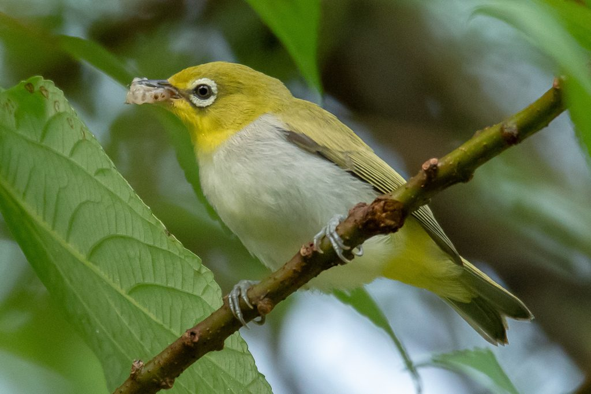
留鸟暗绿绣眼鸟
Zosterops simplex
生境：树冠层 · 果园 · 庭院花木
眼周一圈白色绒羽，像戴了一副白框眼镜，「绣眼」之名由此而来。体长仅约十厘米，常成小群在枝叶间快速穿梭，边跳边发出细碎的「唧、唧」声。它过去被归入日本绣眼鸟，如今华南种群已独立成种。
广西分布广西全境，城镇绿地与果园最常见
不用进山，不用等季节 —— 这十二种鸟，就在你家窗外。
Why Guangxi
广西地处南亚热带，同时拥有喀斯特峰丛、山地常绿阔叶林、滨海红树林与大面积水田。 多样的地形在很小的尺度内叠出错落的生境，也叠出了极高的鸟类多样性。 它还是东亚—澳大利西亚候鸟迁飞通道上的关键节点：每年春秋，数以十万计的候鸟沿着这条线路北上或南下， 而广西，是它们中途必须落下的那一站。
Field Guide · Guangxi
按生境分为三组：枝叶之间、林缘与庭院、水边与开阔地。点击下方标签即可筛选。

留鸟Zosterops simplex
生境：树冠层 · 果园 · 庭院花木
眼周一圈白色绒羽，像戴了一副白框眼镜，「绣眼」之名由此而来。体长仅约十厘米，常成小群在枝叶间快速穿梭，边跳边发出细碎的「唧、唧」声。它过去被归入日本绣眼鸟，如今华南种群已独立成种。
广西分布广西全境，城镇绿地与果园最常见
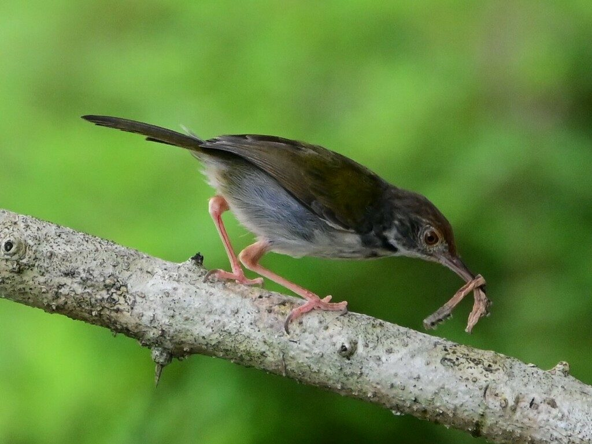
留鸟Orthotomus sutorius
生境：灌丛 · 绿篱 · 庭院
体长约十二厘米，却拖着一条比身体还长的尾巴，尾羽常高高翘起。名字来自它的绝活：用植物纤维把一两片大叶子「缝」成一只口袋，再往里面筑巢——鸟界真正的裁缝。
广西分布广西中南部低地的灌丛与绿篱
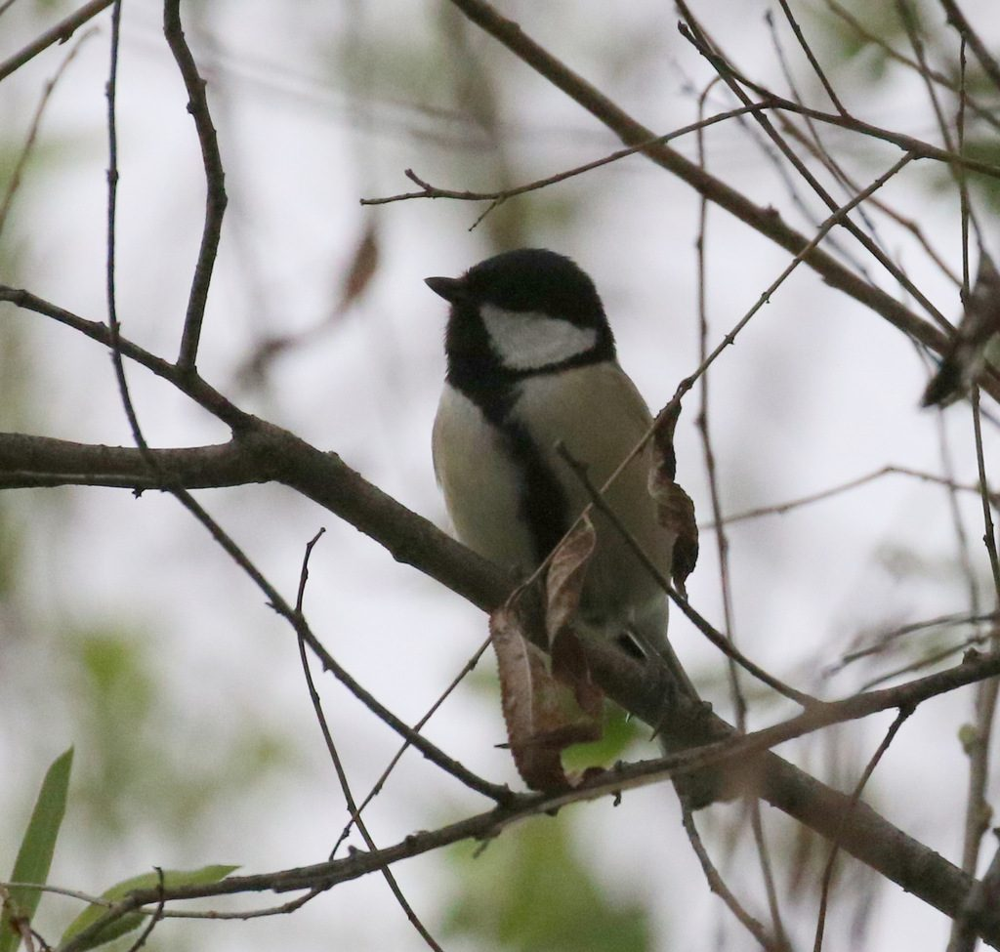
留鸟Parus cinereus
生境：树冠 · 枝干 · 人工巢箱
黑头、白颊，胸前一道宽阔的黑色纵纹，像穿了件系带的小马甲。它是山雀里的「大力士」，能倒挂在细枝末端啄食虫子，也爱钻进树洞或巢箱里过夜。过去被视为欧亚大山雀的一个亚种，东亚种群现已独立成种。
广西分布广西全境丘陵、山地林缘与公园
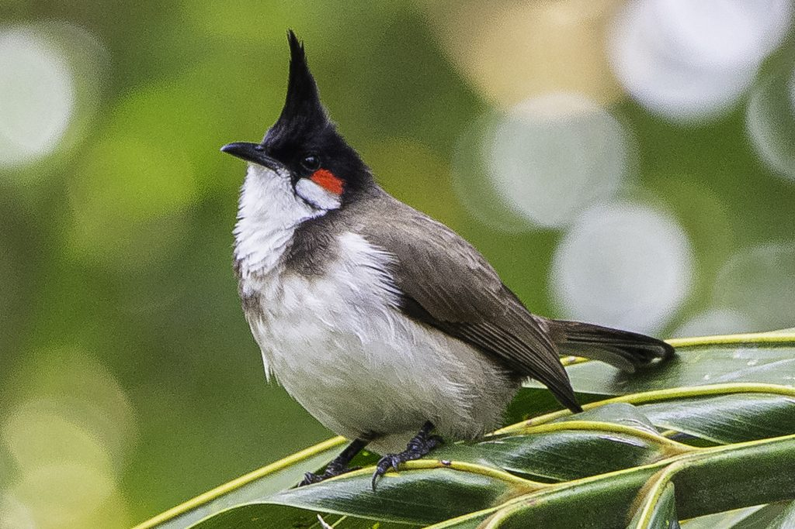
留鸟Pycnonotus jocosus
生境：林缘 · 果园 · 城市绿地
眼后一块鲜红的耳斑，头顶一撮竖立的黑色冠羽，像戴了一顶小小的礼帽。它是最早适应城市生活的鸟类之一，也是广西庭院里最容易被认出的声音——你可能从没见过它，但一定听过它。
广西分布广西全境城镇绿地、果园与乡村
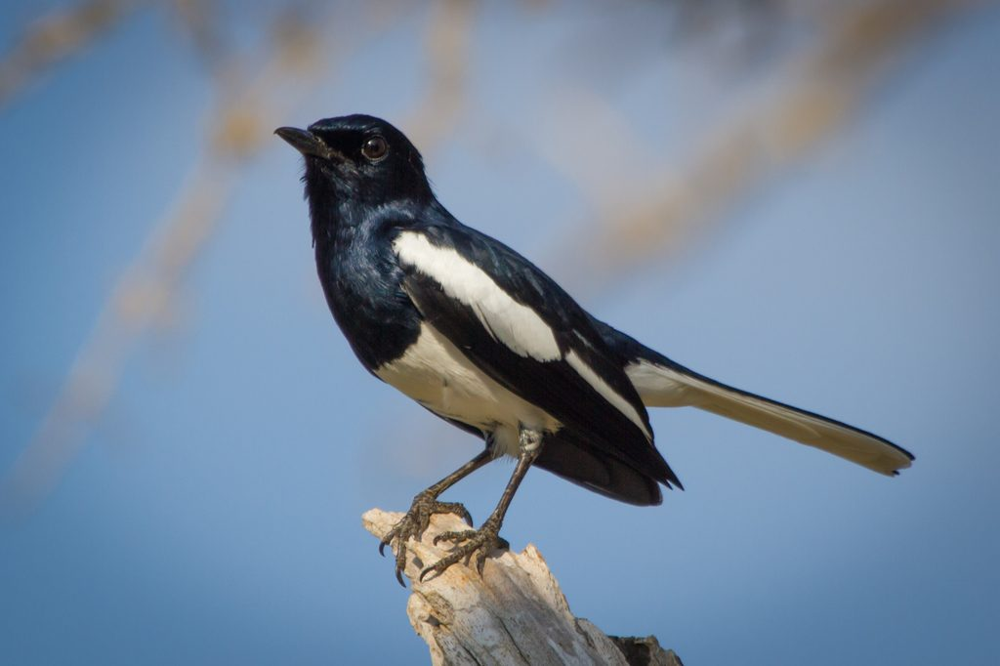
留鸟Copsychus saularis
生境：庭院 · 草地 · 林缘
黑白分明，雄鸟像一只缩小的喜鹊，雌鸟则是灰褐配白。它常站在低枝或屋脊上，把尾巴高高翘起又缓缓放下，一边唱一边抖动翅膀。清晨第一个把你叫醒的，很可能就是它。
广西分布广西全境城镇、村庄与公园
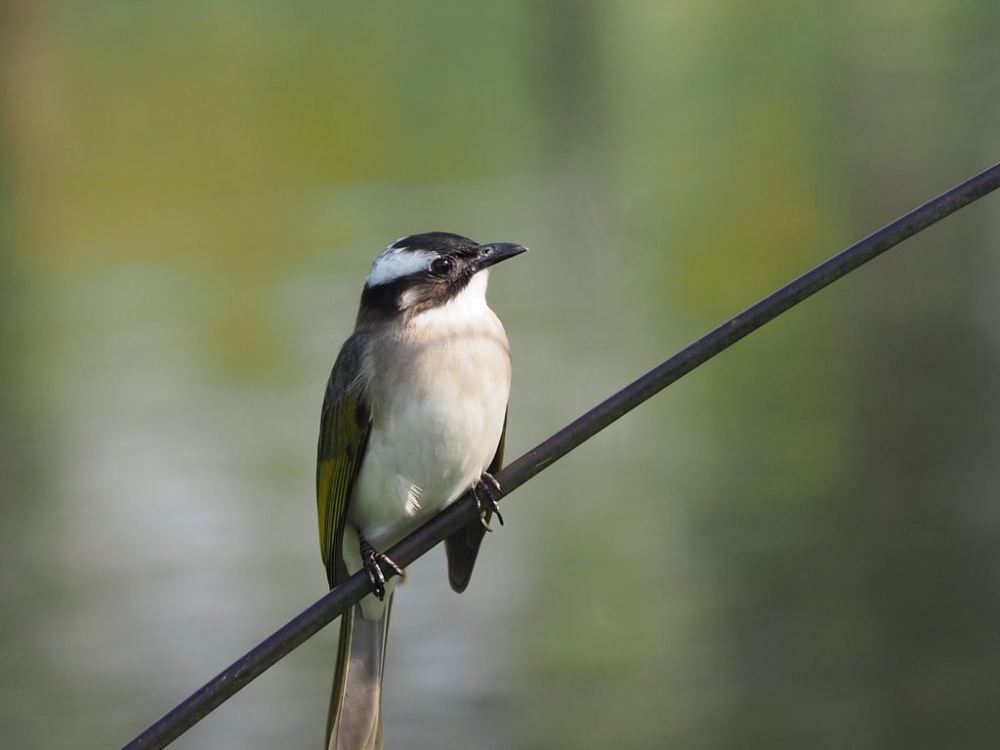
留鸟Pycnonotus sinensis
生境：林缘 · 公园 · 行道树
俗称「白头翁」。其实它的头顶是黑的，白的是眼后延伸到枕部的那一片羽毛，年纪越大的个体白得越明显。清晨公园里叫得最响、最理直气壮的那一只，十有八九是它。
广西分布广西全境，城镇最常见的鸟之一
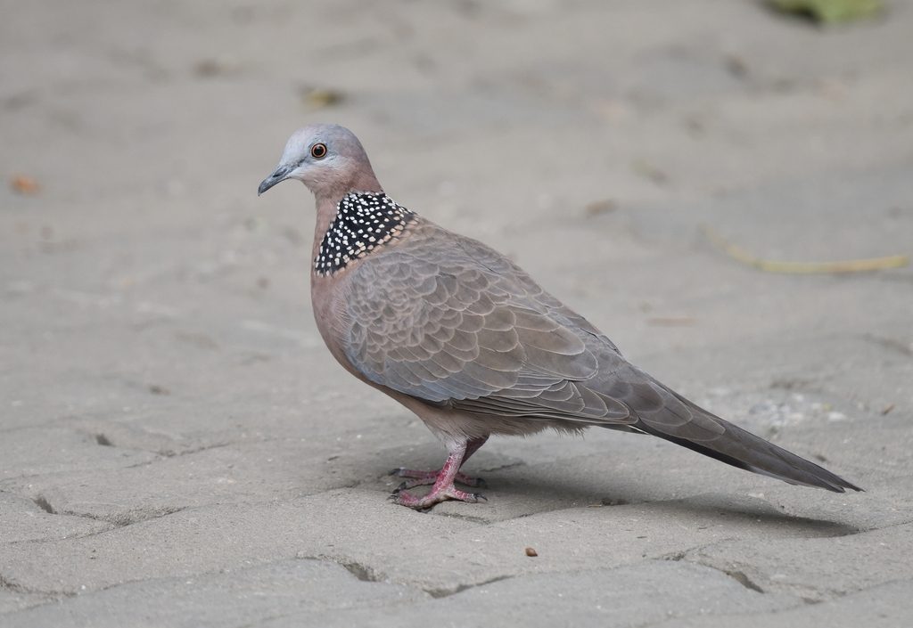
留鸟Spilopelia chinensis
生境：庭院 · 草地 · 行道树
颈后一片黑底白点的羽斑，像戴了条珍珠项链，是它最不会认错的特征。走路时一步一点头，起飞时双翅发出响亮的「扑棱」声。它把巢搭得极其敷衍——几根树枝一搁就算完事，所以幼鸟掉下树是常事。
广西分布广西全境城镇、农田与公园
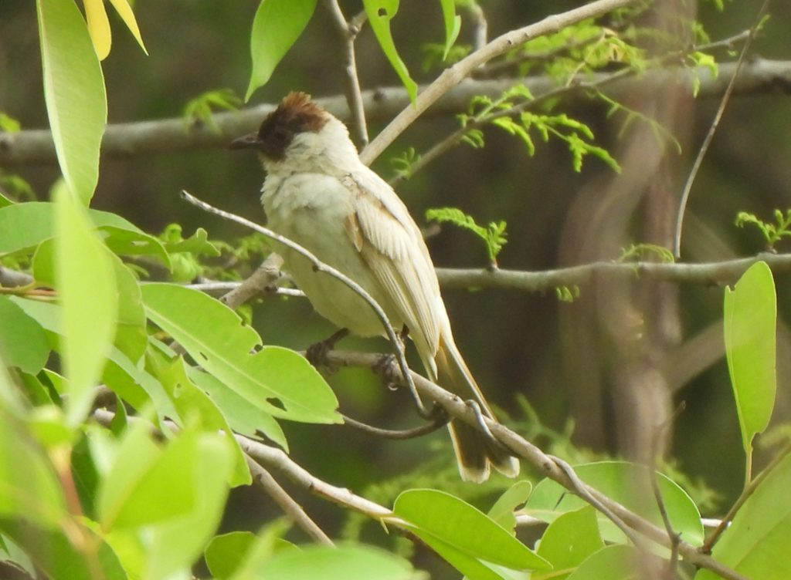
留鸟Pycnonotus aurigaster
生境：林缘 · 灌丛 · 村庄
喉部一片白，尾下覆羽是醒目的橙红色——「白喉红臀」四个字，把它的识别特征说尽了。它常与红耳鹎、白头鹎混群活动，落在同一棵树上时，正好可以对照着认。
广西分布广西全境低山、丘陵与乡村
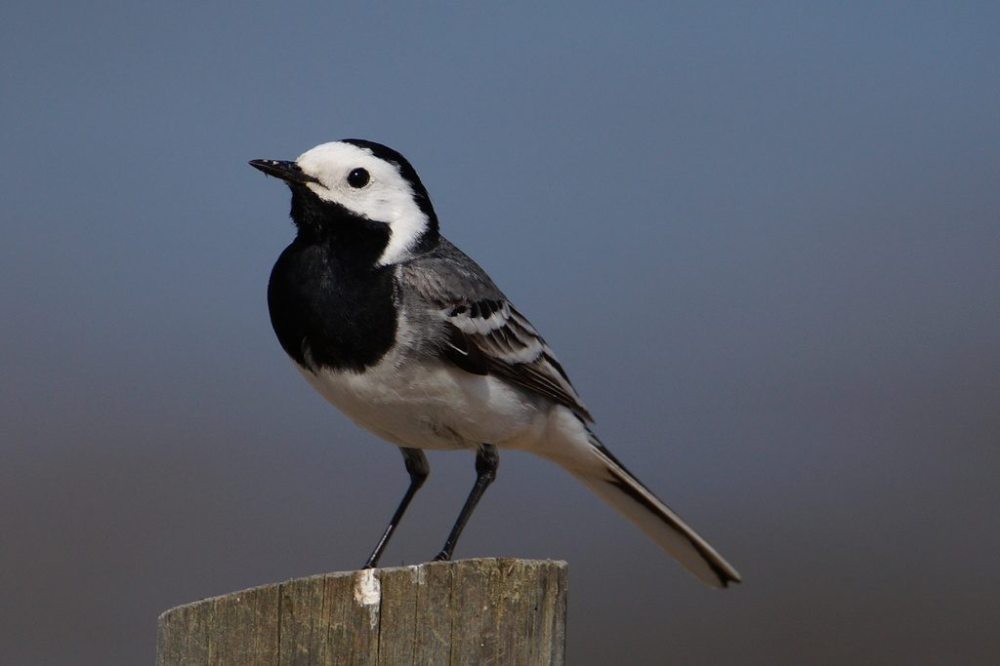
冬候鸟Motacilla alba
生境：河滩 · 水田 · 屋顶与空地
黑白灰三色，飞行时翅膀一起一伏，划出一道波浪形的轨迹，同时发出「唧灵、唧灵」的叫声。落地后尾巴不停地上下摆动——「鹡鸰」这个名字，说的就是它摆尾的样子。在广西多见于秋冬。
广西分布广西全境水域与开阔地，秋冬常见
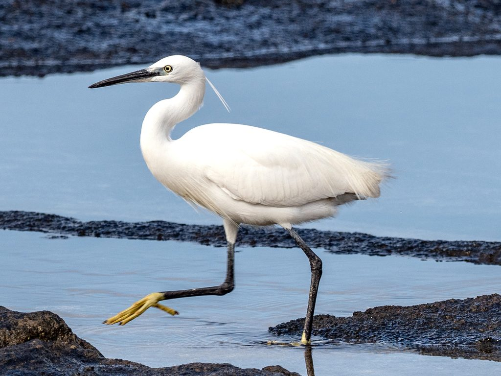
留鸟Egretta garzetta
生境：水田 · 河滩 · 红树林
通体雪白，喙黑、腿黑而趾黄，繁殖期脑后垂下两缕细长的饰羽。它们常在水田中缓步而行，忽然一伸颈便叼起一条小鱼。这是广西乡野最常见的白色身影，也是湿地健康与否最直观的注脚。
广西分布广西全境水田、河湖与沿海滩涂
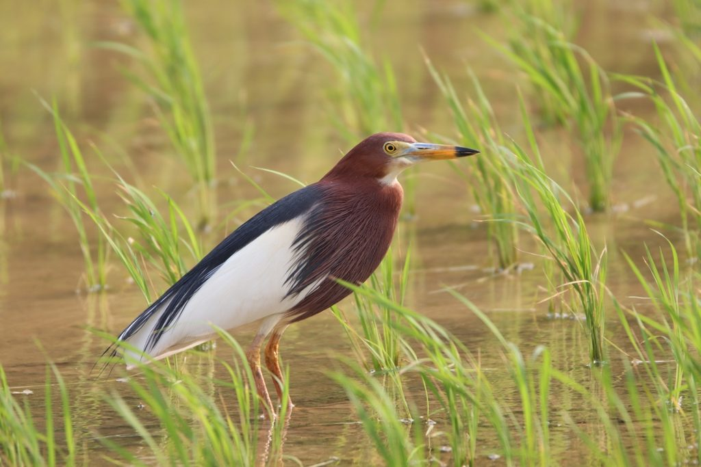
夏候鸟Ardeola bacchus
生境：水田 · 池塘 · 竹林（繁殖）
繁殖期的池鹭一身栗红与石板蓝，非常醒目；非繁殖期却换成褐白相间的条纹装，缩着脖子站在水边，判若两鸟。春夏在广西的水田里极常见，常与白鹭混群，秋冬南迁。
广西分布广西全境水田与池塘，春夏繁殖
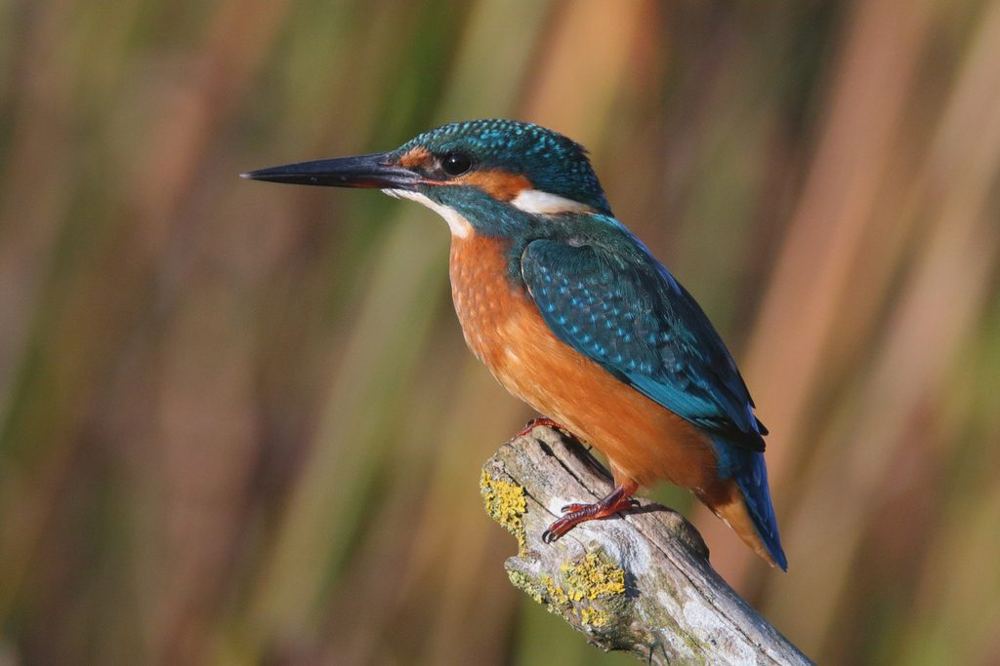
留鸟Alcedo atthis
生境：溪流 · 池塘 · 河岸
背羽是带金属光泽的翠蓝，腹部橙栗，喙长而尖锐。它常一动不动地停在临水的枯枝上，忽然笔直扎进水里，再叼着一条小鱼弹回原处。飞行时贴着水面掠过，像一道蓝色的闪电。
广西分布广西全境溪流、池塘与河岸
Where to look
这十二种鸟大多不需要专门进山。先从最近的一处开始——公园、江边、水田，都是很好的练习场；想去更野的地方，再往后三个。
南宁 · 城区
城市里的一座山林。沿主步道走一圈，鹎类的叫声几乎不会断；清晨和傍晚最容易看到成群的鸟在果树上取食。
代表鸟种：白头鹎 · 红耳鹎 · 鹊鸲
南宁 · 城区
不用出城就能看水鸟。湖边和江岸的浅水区常年有鹭类活动，临水的枯枝上则常停着翠鸟，适合第一次练习「安静地等」。
代表鸟种：白鹭 · 池鹭 · 普通翠鸟
桂林 · 临桂
被称为「漓江之肾」的岩溶湿地，水田与塘泊交错。清晨田埂上白鹭成群，翻耕过的水田是它们最好的食堂。
代表鸟种：白鹭 · 池鹭 · 白鹡鸰
北海 · 合浦
中国连片面积最大的红树林之一，也是东亚—澳大利西亚迁飞通道上的关键补给站。涨潮时水鸟挤上树冠，退潮时整片滩涂都是觅食场。
代表鸟种：白鹭 · 池鹭 · 白鹡鸰
南宁 · 武鸣
离南宁城区最近的山地观鸟地。海拔每升高一段，鸟种就换一批；林缘的果树上常见绣眼鸟与山雀结群混游。
代表鸟种：大山雀 · 暗绿绣眼鸟 · 长尾缝叶莺
崇左 · 龙州
中国唯一的喀斯特季节性雨林保护区。这里也有本页的常见鸟，但真正的看点是那些分布极窄的特有种——需要更多耐心，也更需要遵守预约与准入规定。
代表鸟种：白喉红臀鹎 · 大山雀 · 长尾缝叶莺
Birding ethics
观鸟是一件安静的事。你越不打扰，就越可能看见真正的它们。
不追赶、不围堵、不为了「起飞的照片」故意靠近。繁殖期远离巢区，幼鸟离巢时尤其要退后一步。
播放鸟鸣录音、投喂食物引诱、修剪遮挡枝条，都会改变它们的行为与能量消耗。好看的照片，不该由鸟来买单。
繁殖巢址一律不外传，哪怕是「常见鸟」。常见不等于不受影响——正是这些最常见的鸟，最容易被随手打扰。
认真记录时间、地点、数量与行为，并上传到公开的观鸟记录平台。长期、连续、可核查的数据，是保护一片栖息地最有力的证据。